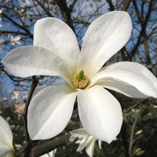

Представители рода растут в Северной Америке и Восточной Азии (Китай, Корея, Япония). На территории России в диком виде магнолия обратнояйцевидная встречается на острове Кунашир.
|
||||
|  | Магно́лия (лат. Magnolia) — род цветковых растений семейства Магнолиевые (Magnoliaceae), содержащий около 240 видов.
Представители рода растут в Северной Америке и Восточной Азии (Китай, Корея, Япония). На территории России в диком виде магнолия обратнояйцевидная встречается на острове Кунашир. |
|||
| Никишов Егор 11Б | ||||